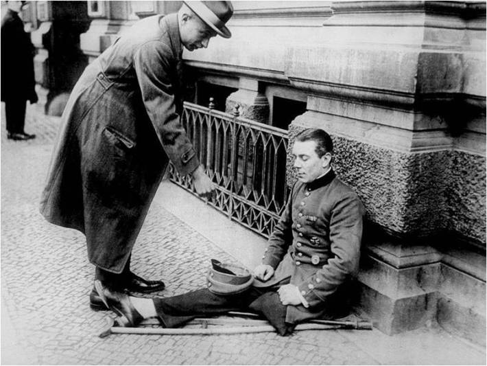
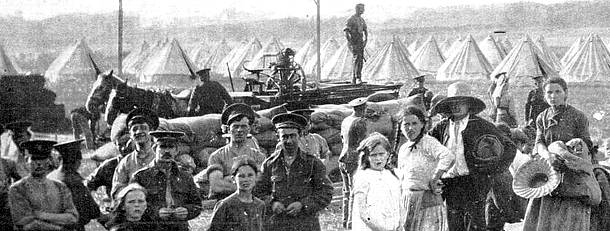
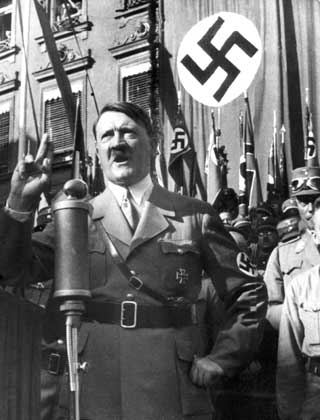
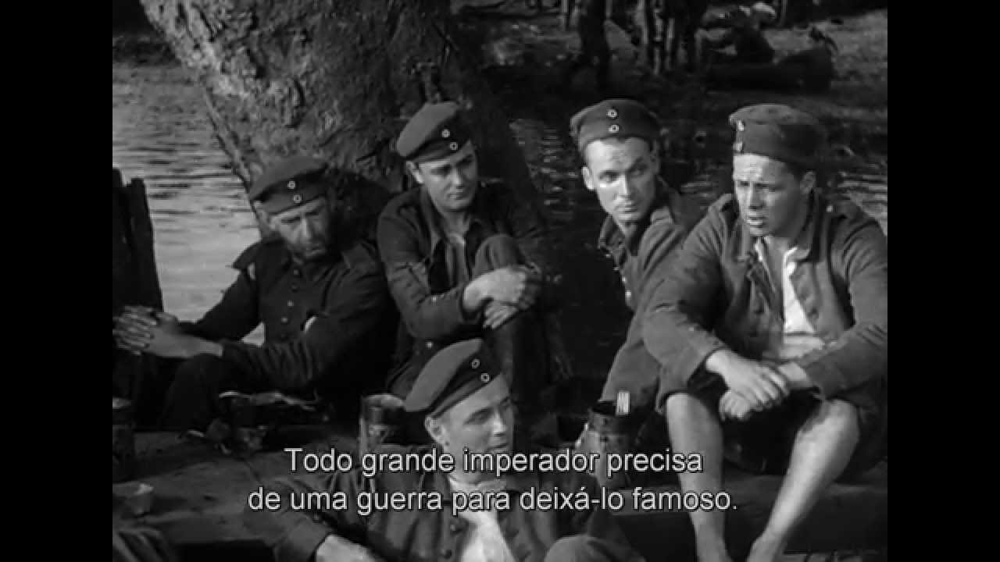

O pagamento de reparações onerosas impostas aos perdedores após a Primeira Guerra Mundial, durante um período inflacionário em toda a Europa na década de 1920 – outro resultado direto dos efeitos materiais de uma guerra catastrófica – causou uma hiperinflação da moeda alemã, o Reichsmark , por volta de 1923. Aquele período de hiperinflação combinado com os efeitos da Grande Depressão (iniciada em 1929) abalou seriamente a estabilidade da economia da Alemanha, acabando com as economias pessoais da classe média e gerando desemprego em massa.
O caos econômico em muito colaborou para aumentar a agitação social, desestabilizando a já frágil República de Weimar. Os esforços das potências europeias ocidentais para marginalizar a Alemanha, tiveram como resultado o enfraquecimento e isolamento de seus líderes democratas, fazendo surgir entre a população alemã a idéia de que era necessário recuperar seu prestígio nacional através da remilitarização e da expansão territorial.
A reviravolta social e econômica que se seguiu à Primeira Guerra Mundial em muito contribuiu para desestabilizar a incipiente democracia alemã, permitindo assim a ascensão de muitos partidos radicais de direita na Alemanha durante a República de Weimar . Tão destrutiva quanto as rígidas determinações do tratado de Versalhes era a crescente convicção de muitos alemães de que haviam sido "apunhalados pelas costas" pelos "criminosos de novembro" – ou seja, por aqueles que haviam ajudado a formar o novo governo de Weimar e a negociar a paz que os alemães tanto desejavam, mas que foi tratada de forma desastrosa no Tratado de Versalhes.
Muitos alemães pareciam haver se esquecido de que haviam, eles mesmos, elogiado a queda do Kaiser [Imperador], aprovado a reforma parlamentar democrática e comemorado o armistício. Eles faziam questão de apenas se lembrar de que a esquerda alemã – os socialistas, comunistas e, no imaginário popular também os judeus, – havia entregue a honra alemã em um tratado de paz vergonhoso, mesmo que nenhum exército estrangeiro houvesse pisado em solo alemão. O mito da Dolchstosslegende (punhalada nas costas) foi criado e difundido por já aposentados líderes militares alemães da época da Guerra que, já em 1918 sabendo que a Alemanha não mais tinha condições de manter a guerra, haviam aconselhado o Kaiser a pedir a paz. A lenda criada ajudou a desacreditar ainda mais os círculos socialistas e liberais alemães, que eram os que mais se dedicavam a manter a frágil experiência democrática alemã.Os Vernunftsrepublikaner ("republicanos racionais"), entre eles o historiador Friedrich Meinecke e o escritor alemã que havia recebido o prêmio Nobel, Thomas Mann, inicialmente haviam resistido à reforma democrática mas, devido aos problemas do pós-guerra sentiram-se na obrigação de apoiar a República de Weimar, como a menos pior das alternativas possíveis. Eles tentaram afastar seus compatriotas da polarização entre a esquerda e a direita radicais. As promessas da direita nacionalista alemã de revisar o Tratado de Versalhes, pela força caso necessário, conquistavam cada vez mais simpatizantes em círculos respeitados pela opinião pública. Enquanto isso, os rumores de uma iminente ameaça comunista, após a eclosão da Revolução Bolchevique na Rússia e dos breves golpes e revoluções comunistas na Hungria (Bela Kun) e na própria Alemanha (i.e. a Revolta Espartacista, Spartakusaufstand ), começavam a alterar o equilíbrio da balança da opinião política alemã decididamente em prol das causas da direita.
Enquanto os agitadores da esquerda cumpriam pesadas sentenças na cadeia por gerarem inquietação política, os ativistas radicais de direita, como Adolf Hitler, cujo Partido Nazista havia tentado depor o governo da Bavária e iniciar uma "revolução nacional" no Beer Hall Putsch em novembro de 1923, cumpriram apenas nove meses dos cinco anos de suas sentenças por traição, considerada crime capital. Foi enquanto cumpria sua sentença na prisão, que Hitler escreveu seu manifesto político, Mein Kampf (Minha Luta).
As dificuldades criadas pela agitação social e econômica após a Guerra, pelos termos onerosos do tratado de paz, e pelo simples medo de uma possível tomada do poder pelos comunistas, fez com que as classes médias alemãs colocassem em dúvida as soluções democráticas pluralistas da Alemanha de Weimar. Os problemas também alimentaram o desejo da população para ter um governo com grande autoridade, um tipo de liderança que os eleitores alemães, eventual e infelizmente encontraram em Adolf Hitler e em seu Partido Nacional-Socialista. Condições semelhantes também beneficiaram os sistemas de direita autoritários e totalitários do leste europeu, iniciando-se pelos países derrotados. Todos esses eventos colaboraram para o aumento dos níveis de intolerância e para a concordância popular com o anti-semitismo e com as violentas formas de discriminação contra as minorias nacionais da região.
Por fim, a destruição e a perda catastrófica de vidas ocorridas durante a Primeira Guerra Mundial resultou no que poderia ser descrito como desespero cultural em muitas nações que haviam participado dos combates. A decepção com as políticas nacionais e internacionais e um sentimento de desconfiança em relação aos líderes políticos e funcionários governamentais, permeavam a consciência de um público que havia testemunhado os danos de um conflito devastador que havia durado quatro anos. A maioria dos países europeus perdeu práticamente toda uma geração de homens jovens. Embora alguns escritores glorificassem a violência da guerra e o contexto nacional do conflito, como o alemão Ersnt Jünger, em sua obra datada de 1920, entitulada “Tempestades de Aço”, Stahlgewittern, na verdade foi o relato vivo e realista dos combates nas trincheiras, retratados na obra-prima de Erich Maria Remarque “Nada de Novo no Front” (Im Westen nichts Neues), datada de 1929, que conseguiu captar a experiência das tropas nas frentes de batalha e expressar a alienação da "geração perdida", que retornava ao lar após a Guerra e se sentia incapaz de se adaptar aos tempos de paz, e ao mesmo tempo era tragicamente incompreendida pelos civis que não haviam testemunhado os horrores da Guerra em primeira mão.
Em alguns círculos, essa indiferença e essa desilusão com as políticas bélicas e os conflitos auxiliaram a aumentar o sentimento pacifista. Nos Estados Unidos a opinião pública era a favor do retorno ao isolacionismo; e esse sentimento popular foi o fundamento da recusa do senado norte-americano em ratificar o Tratado de Versalhes e aprovar a inclusão dos EUA na Liga das Nações proposta pelo presidente Wilson. Para uma geração de alemães, aquela alienação social e desilusão política foi retratada na obra “E agora, seu moço?” (Kleiner Mann, was nun?), do escritor alemão Hans Fallada, uma história sobre um alemão "comum" em meio ao tumulto da crise econômica e do desemprego, e igualmente vulnerável às palavras sedutoras dos políticos radicais de esquerda e de direita. A obra de Fallada, de 1932, retratou com precisão a Alemanha de sua época: um país imerso em inquietações econômicas e sociais e polarizado entre as duas extremidades do espectro político. Muitas das causas dessa desordem tiveram suas origens na Primeira Guerra Mundial e no período que a seguiu; e o caminho em seguida tomado pela Alemanha resultaria em uma guerra ainda mais destrutiva nos anos vindouros.